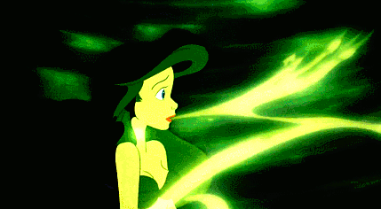
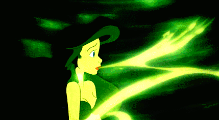

Purpose
Ursula’s purpose is to convince Ariel into giving up her voice for a chance to become a human, she manages to get Ariel to sign a contract as well. All of this allows Ursula to gain leverage over King Triton so she could fulfill her goal of seizing power over the ocean kingdom.
 

"If you want to cross the bridge, my sweet, you've got to pay the toll." Ursula presents this deal as something that is reasonable and simple, she softens the gravity of the situation through the tone of her voice. This causes Ariel to feel as if the exchange is fair.